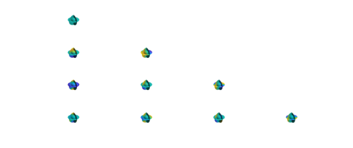

Introduction
Solid harmonics are eigenfunctions of the Laplace operator in spherical coordinates:
$$\nabla^2\phi =\frac{1}{r^2}\left[\frac{\partial}{\partial r}\left(r^2\frac{\partial\phi}{\partial r}\right)+\frac{1}{\sin\theta} \frac{\partial}{\partial\theta}\left(\sin\theta\frac{\partial\phi}{\partial\theta}\right)+ \frac{1}{\sin^2\theta}\frac{\partial^2\phi}{\partial\lambda^2}\right] = 0.$$
This relationship holds because spherical harmonics are eigenfunctions of the surface Laplace (Laplace-Beltrami) operator, i.e.,
$$ \frac{1}{\sin\theta}\frac{\partial}{\partial\theta} \left(\sin\theta\frac{\partial Y^m_l}{\partial\theta}\right)+ \frac{1}{\sin^2\theta} \frac{\partial^2 Y^m_l}{\partial\lambda^2} = -l(l+1)Y^m_l,$$
where $Y^m_l$ stands for the normalized spherical harmonic of degree $l$ and order $m$. Substitution of $\phi=F(r)Y^m_l$ into the Laplace equation gives
$$\frac{\partial}{\partial r}\left(r^2\frac{\partial FY^m_l}{\partial r}\right)=l(l+1)FY^m_l.$$
Therefore, general solutions to this equation are of the form $F(r) = Ar^l$ or $F(r)=Br^{-l-1}$. The particular solutions of the Laplace equations are regular solid harmonics, i.e.,
$$R^m_l(r,\lambda,\theta) = a_{lm}r^lY^m_l(\lambda,\theta),$$
which vanish at the origin, and irregular solid harmonics, i.e.,
$$I^m_l(r,\lambda,\theta) = a_{lm}\frac{Y^m_l(\lambda,\theta)}{r^{l+1}}.$$
In this example, we will use solid harmonics to mean the regular solid harmonics $R^m_l$ since the irregular solid harmonic possess a singularity at the origin. The solid harmonics are normalized so that their 2-norm is equal to $1$:
$$\int_B R^m_l R^{m*}_ldV=1.$$
Thus, we have
$$a_{lm}^2\int_0^1r^{2l}r^2dr\int_{\partial B}Y^m_lY^{m*}_ldS=1,$$
so that $a_{lm} = \sqrt{2l+3}$.
Solid harmonics in Ballfun
Solid harmonics can be constructed in Ballfun by calling the command solharm. This creates a solid harmonic of a given degree and order. For example, $R^2_4$ can be constructed and plotted as follows:
R42 = ballfun.solharm(4, 2); plot( R42 ), axis off

We can verify that this function is an eigenfunction of the Laplace operator with zero eigenvalue as follows:
norm( laplacian( R42 ) )
ans =
1.888485572980376e-14
The solid harmonics are also orthonormal on the ball with respect to the standard $L^2$ inner-product. This can be verified with the sum3 command:
R40 = ballfun.solharm(4, 0); sum3( R42.*conj(R42) ) sum3( R40.*conj(R40) ) sum3( R42.*conj(R40) )
ans =
0.999999999999999
ans =
1.000000000000001
ans =
-1.321963895882218e-16
Here is a plot of the solid harmonics $R^m_l$, with $l=0,...,4$ and $0\leq m\leq l$.
N = 3;
for l = 0:N
for m = 0:l
R = ballfun.solharm(l,m);
subplot(N+1,N+1,l*(N+1)+m+1), plot(R)
axis off
end
end

Computing solid harmonic coefficients
A fast and stable algorithm for computing the solid harmonics is implemented in Ballfun. The computation of the solid harmonics $R^m_l$ of degree $l$ and order $m$ requires $\mathcal{O}(l\log l)$ operations. The solid harmonics $R^m_l$ can be expressed as
$$R^m_l(r,\lambda,\theta) = \sqrt{2l+3}r^lP^m_l(\theta)e^(im\lambda),$$
where $P^m_l$ stands for the associated Legendre polynomial of degree $l$ and order $m$.
The main issue in the computation of $R^m_l$ is to find the Fourier coefficients of $P^m_l$. Thus, the algorithm used in solharm to compute the coefficients of this polynomial is the Modified Forward Column (MFC) method described in [3]. The most popular recursive algorithm [1] (Forward Column method) that computes non-sectoral ($l>m$) $P^m_l$ from previously computed $P^m_{l-1}$ and $P^m_{l-2}$ is given by
$$P^m_l(\theta) = a_{lm}\cos(\theta)P^m_{l-1}(\theta)+b_{lm}P^m_{l-1},\quad \forall l>m,$$
where
$$P^m_l(\theta) = a_{lm}\cos(\theta)P^m_{l-1}(\theta)+b_{lm}P^m_{l-1},\quad \forall l>m,$$
and
$$b_{lm} = \sqrt{\frac{(2l+1)(l+m+1)(n-m-1)}{(l-m)(l+m)(2l-3)}}.$$
The sectoral ($l=m$) $P^m_l$ can be computed using the initial values $P^0_0(\theta)=1$ and $P^1_1(\theta)=\sqrt(3)\sin(\theta)$ and the recursion [1]
$$P^m_m(\theta)=\sin(\theta)\sqrt{\frac{2m+1}{2m}}P^{m-1}_{m-1},\quad \forall m>1.$$
Using these recursions, $P^m_l(\theta)$ is evaluated at $2l+1$ points and the coefficients are then recovered by an FFT.
The recursive algorithm is unstable and will overflow for large degrees $l>1900$ [2] because of the factors $\sin(\theta)^m$ in $P^m_l$. The idea of the MFC method is to compute $P^m_l(\theta)/\sin(\theta)^m$ in the recursion and then multiply by $\sin(\theta)^m$ at the end before the FFT. The recursion to compute the sectoral values of $P^m_l/\sin(\theta)^m$ remains unchanged:
$$\frac{P^m_l(\theta)}{\sin(\theta)^m} = a_{lm}cos(\theta) \frac{P^m_{l-1}(\theta)}{\sin(\theta)^m}+b_{lm} \frac{P^m_{l-1}}{\sin(\theta)^m},\quad \forall l>m.$$
Finally, the sectoral values of $P^m_m(\theta)/\sin(\theta)^m$ are computed using the initial values $P^0_0(\theta)/\sin(\theta)^0 = 1$ and $P^1_1(\theta)/\sin(\theta) = \sqrt(3)$ and the relationship
$$P^m_m(\theta)=\sqrt{\frac{2m+1}{2m}}P^{m-1}_{m-1},\quad \forall m>1.$$
The computation of the solid harmonics is very fast in Ballfun and a solid harmonics of degree $150$ can be computed in a few tenths of a second:
tic ballfun.solharm(150, 50); toc
Elapsed time is 0.929024 seconds.
References
[1] O. L. Colombo, Numerical methods for harmonic analysis on the sphere, report DGS-310, Department of Geodetic Science and Surveying, Ohio State University, 1981.
[2] D. M. Gleason, Partial sums of Legendre series via Clenshaw summation, Manuscr. Geod., 10 (1985), pp. 115-130.
[3] S. A. Holmes and W. E. Featherstone, A unified approach to the Clenshaw summation and the recursive computation of very high degree and order normalised associated Legendre functions, Journal of Geodesy, 76 (2002), pp 279-299.